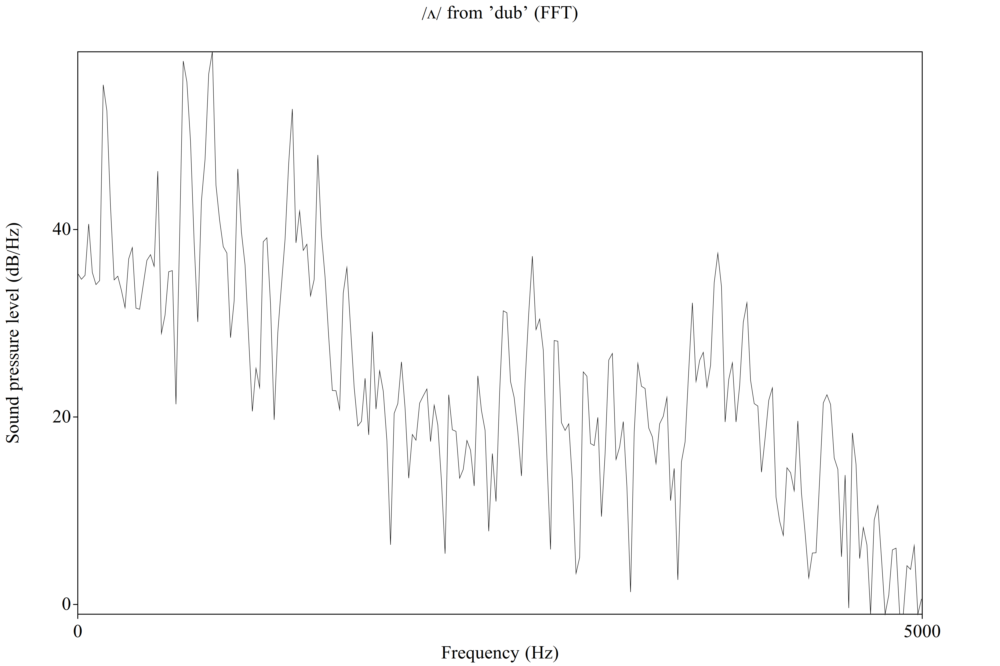

# Linear Predictive Coding ### Will Styler - LIGN 168 --- ### Today's Plan - Source/Filter Review - Understanding LPC - Where is LPC useful? - What are the dangers of LPC? --- ### Review: Source Filter Theory - **Source**: The harmonics output by the larynx <img class="r-stretch" src="phonmedia/voicing_filtered_fft.png"> --- - **Filter**: The resonance properties of the rest of the vocal tract - These can be poles (adding power) or zeroes (removing power) - The speech signal can be thought as the result of imposing the filter on the source --- ### Thus, we need to understand two states to model speech! - What is the source doing? - (i.e. What is f0 and that whole situation?) - What is the filter doing? - (i.e. what are the poles and zeroes like) - **These two things are independent of one another** --- ### Understanding f0 and the Source - What is f0? - What are the harmonics' (relative) amplitudes? - Is the source signal noisy? Irregular? - This is a question of pitch tracking and source modeling - *We'll talk about this next time!* --- ### Understanding the filter - Where are the main poles which are filtering the source? - Where are the main zeroes which are filtering the source? - How are these poles and zeroes changing over time? - We use LPC for this! --- ### The filter has a large effect on a signal's *spectral envelope* --- ### The filter has a large effect on a signal's *spectral envelope* <img class="r-stretch" src="phonmedia/spectrum_i_envelope.png"> --- ### If we can estimate that envelope, without the effect of the source, we have the filter! - To do that, we need... --- ## Linear Predictive Coding (LPC) --- ### LPC is a tool for analyzing the spectral properties of a signal - It aims to estimate the filter **only**, and track changes to that filter over the duration of a signal - This was developed specifically for speech encoding, although it's useful elsewhere - It's *linear* in that it uses linear equations to model the speech signal - It's *predictive* in that it looks at past moments to *predict* the present state - It can be used to *(en)code* and *(de)code* speech signals --- ### There's a lot of math underlying, but we're going to focus on intuitions - Luckily, the math is very easy to find out there on the internet - ... and boy do electrical engineers love making this opaque and equationy --- ### LPC has a few main steps to 'encode' a sound - Step 1: Division into frames - Step 2: Auto-Correlation Computation - Step 3: Coefficient Calculation --- ### Step 1: Division into frames ('framing') - We're going to take the sound and slice it into a series of overlapping frames - Usually this window is ~20-30ms - This is much longer than the windows used for Fourier Analysis - The same **time-frequency tradeoff** applies here - We'll use a windowing function to smooth transitions between windows (e.g. Hamming Windowing) - This gives us a series of *frames* that we'll evaluate step by step - We can assume/hope/pray that the vocal tract state is relatively steady in each 30 ms bucket --- ### Note: Framing will be a regular step all quarter - It is very common to do framing as a part of nearly any speech processing pipeline - The window function doesn't tend to vary too much - Timescales sometimes do, but it's usually around 20-30ms --- ### A nice visualization of frames --- ### Step 2: Autocorrelation - Autocorrelated things are predictable on the basis of their immediate past - Speech is heavily *autocorrelated* - Prior chunks of the signal look a lot like the subsequent chunks - Tongues don't tend to teleport --- ### An /i/ vowel <img class="r-stretch" src="phonmedia/waveform_i.png"> --- ### Finding autocorrelation is a brute-force process - Take the correlation between the frame and the exact same frame at the same time - This will be a perfect correlation - Now, take the correlation between the frame and the frame delayed by a certain **lag** - This will be a much lower number - Now, continue trying longer lags and watch the autocorrelation change - Remember that a given frame will have more than one cycle (period) in it - When the cycles align, autocorrelation will spike! - We get a function from this --- <img class="r-stretch" src="diagrams/autocorrelation_animation.gif"> --- ### an /i/ vowel <img class="r-stretch" src="phonmedia/waveform_i.png"> --- ### An /n/ <img class="r-stretch" src="phonmedia/waveform_n.png"> --- ### This outputs an 'Autocorrelation Function' - "Over the range of possible lags, here's how the autocorrelation changes" - This will have multiple spikes (with the biggest at one period) - *The timing and degree of these spikes actually tells us about the overall spectral shape* --- <img class="r-stretch" src="phonmedia/lpc_autocorrelationfunction.png"> --- ### Step 3: Coefficient Generation - **Black Box Alert!** This step requires math which we are not discussing - Google 'Levinson-Durbin Algorithm for solving the Yule-Walker equations' - The goal here is to create a set of *coefficients* which describe the filter's *spectral envelope* - Together, these coefficients describe the shape of the filter (poles, zeroes, and all) - This is an optimization and modeling process! --- ### Poles and Zeroes of the Spectral Envelope <img class="r-stretch" src="phonmedia/spectrum_i_envelope.png"> --- ### The Key Insight: Generate filters, treat the source as error, and minimize the error! - Sure, there's source information in the autocorrelation function, but a good filter will minimize its importance when *predicting* the signal - We're modeling the stuff that changes less often (e.g. the tongue, formants, etc) and just letting the source do its own little thing - We solve these equations to find *the filter that minimizes the contributions of the source!* - The 'LPC model' is a set of 10-20 coefficients describing the filter in detail --- ### The shape of the LPC should reflect the filter <img class="r-stretch" src="phonmedia/spectrum_ae.png"> --- ### The shape of the LPC should reflect the filter <img class="r-stretch" src="phonmedia/spectrum_ae_lpc.png"> --- ### The shape of the LPC should reflect the filter --- ### The shape of the LPC should reflect the filter --- ### The shape of the LPC should reflect the filter  --- ### The shape of the LPC should reflect the filter <img class="r-stretch" src="phonmedia/spectrum_uh_lpc.png"> --- ### LPC doesn't have to be done on vowels --- ### LPC doesn't have to be done on vowels --- ### How many coefficients should we use? - 2 per 1000Hz below Nyquist plus three more - [This is used by Santiago Barreda, who knows his stuff](https://search.r-project.org/CRAN/refmans/phonTools/html/lpc.html) - 2 per formant + 3 - This is basically the same thing, assuming one formant per 1000 Hz - Use too few, you'll miss nuances - Use too many, you'll overfit! - **You will get exactly as many formants as you ask for!** - ... so make sure you're asking for the right number --- ### How many coefficients? <img class="r-stretch" src="phonmedia/spectrum_ae.png"> --- ### 12 Coefficients (for 5000 Hz) <img class="r-stretch" src="phonmedia/spectrum_ae_lpc.png"> --- ### 20 Coefficients (for 5000 Hz) --- ### 100 Coefficients (for 5000 Hz) <img class="r-stretch" src="phonmedia/spectrum_ae_lpc100.png"> --- ### How many coefficients? --- ### 12 Coefficients (for 5000 Hz) <img class="r-stretch" src="phonmedia/spectrum_uh_lpc.png"> --- ### 20 Coefficients (for 5000 Hz) --- ### 100 Coefficients (for 5000 Hz) --- ### LPC models the filter *independent of the source* - The LPC coefficients describe a filter which can apply cleanly to any source you'd like - The LPC **doesn't model the source at all**, instead, it treats it as noise! - So, we end up with a set of coefficients which describe a smooth filter function - Most LPCs are 'all pole' and only capture prominences - Some LPC formulations use zeroes too, but it doesn't win that much --- ### You don't even need voicing - This process still works even for voiceless sounds which have source and filter - You model a voiceless source using white noise, and then estimate the filter - LPC makes most sense for vowels and sonorants, but it's not senseless for consonants or other sounds - Particularly for sound compression (more later!) --- ### We can do LPC for *every single frame* - This allows us to model the filter across an entire word - Each frame gets a different set of LPC coefficients - A word can be described with a series of sets of LPC coefficients, plus some source information --- ### So, one more time, LPC - We take a signal - Step 1) We cut it into overlapping frames - Step 2) We do an autocorrelation analysis on these frames - Step 3) We use the autocorrelation function to get coefficients which model the filter and minimize the effect of the source - These coefficients estimate the shape of the filter --- ## Where is LPC useful? --- ### Why would we spend an entire day on this one algorithm? - **Because it's ridiculously useful** --- ### LPC is used for identifying formants - (Approximately) every formant finding algorithm uses LPC - Understanding LPC helps us understand how formants are found --- ### Formants are ghosts in the spectral envelope! <img class="r-stretch" src="phonmedia/spectrum_ae.png"> --- ### LPC reveals them! <img class="r-stretch" src="phonmedia/spectrum_ae_lpc.png"> --- ### We can do LPC across whole words to get a formant track --- ### We can do LPC across whole words to get a formant track --- ### We can do LPC across whole words to get a formant track <img class="r-stretch" src="phonmedia/spectrogram_chickadees_broad.png"> --- ### We can do LPC across whole words to get a formant track --- ### LPC works on more than just speech - Any time you have a source signal which reveals a filter, you can do LPC - Modeling musical instrument resonances - Identifying room resonances - Seismic Data Analysis - Sonar and Radar Processing - ECG, EEG data too --- ### The LPC, together with the source, encodes speech quite well - You can use LPC to 'deconstruct' speech before transmission, and reconstruct it later - Do an LPC, then send information about the source, and send LPC coefficients - Combine the source and the filter and you have the signal again - Assuming you've modeled both things properly - More coefficients == More data == More fidelity - **We're going to see LPC used like this over and over again!** --- ### LPC allows you to estimate *and then remove/replace* the filter - This allows for source-filter resynthesis, where you isolate the source and change the filter (or vice versa) - This allows you to 'change the formants' or 'swap out the voice' - *More on this soon!* --- ### LPC is *excellent* for compressing any kind of audio - *More on this soon!* --- ### Lots of modern signal processing approaches do similar things - "Oh, this is capturing the filter" is a very common refrain in speech science! - Many things which do speech analysis 'sort of do LPC' even if they don't directly --- ## Dangers of LPC --- ### 'Never Trust an LPC' - Common adage, but given to me by [Rob Hagiwara](https://home.cc.umanitoba.ca/~robh/) - LPC is an *estimate*, but especially with noisy sources, it's a noisy estimate - Often, Praat will disagree with itself (e.g. the found formant will change depending on small tweaks to settings or different methods) - LPC formant tracks tend to bounce around and have discontinuities --- ### Cats (no LPC) --- ### Cats (5 Formants) --- ### LPC will give you exactly what you ask for - 'Computers are dumb, they do exactly what you tell them to' - LPC can be done where it shouldn't be! - ... or where the results aren't super meaningful --- ### LPC will find the requested filter no matter what! <img class="r-stretch" src="phonmedia/waveform_s.png"> --- ### LPC will find the requested filter no matter what! --- ### LPC will find the requested filter no matter what! <img class="r-stretch" src="phonmedia/spectrum_s_lpc.png"> --- ### LPC doesn't know the right number of coefficients, you do! - ... and it will find as many as you ask for --- ### Cats (no LPC) --- ### Cats (5 Formants) --- ### Cats (10 Formants) <img class="r-stretch" src="phonmedia/spectrogram_cats10formants.png"> --- ### Cats (50 Formants) <img class="r-stretch" src="phonmedia/spectrogram_cats50formants.png"> --- ### LPC is less useful for aperiodic, non-source-filtery sounds - Formants aren't meaningful during /s/ or /ʃ/ (e.g.) - LPC compression is less efficient for aperiodic sounds (meaning more data is required to transmit with fidelity) - LPC will work on anything, but isn't useful for manythings --- ### LPC requires good, clean data - The uglier the source, the harder it is to estimate the filter! --- ### LPC has lots of parameters to get right - Frame Length - Window Shape (e.g. Hamming, Hann, Gaussian) - Number of Coefficients - Which is linked to the input sampling rate - Exact method of solving the equations - Methods of estimating the source --- ### Finally, in order to recreate the signal on the other end, you have to track the source pitch well - ... and that's a whole big ball of pain for next time! --- ### Wrapping Up - Source-Filter Theory isn't just a phonetic idea, it's a way of life - LPC estimates the filter by framing, measuring autocorrelation, and then estimating the filter which minimizes the effect of the source - With the filter, we can measure formants, compress speech, analyze other sounds, and compress anything - LPC isn't the most trustworthy, will give you what you ask for, is less useful for aperiodic things and dirty data, and has lots of parameters to control - **You will see LPC over and over in speech processing, and it's your friend!** --- ### Next time - Tracking and Measuring Pitch and Voice --- <huge>Thank you!</huge>